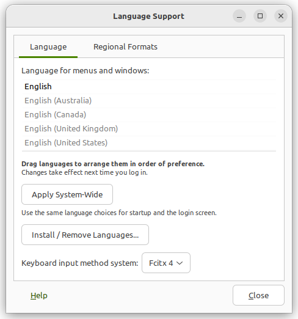
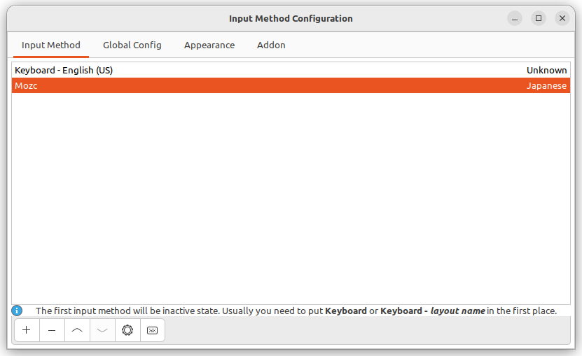
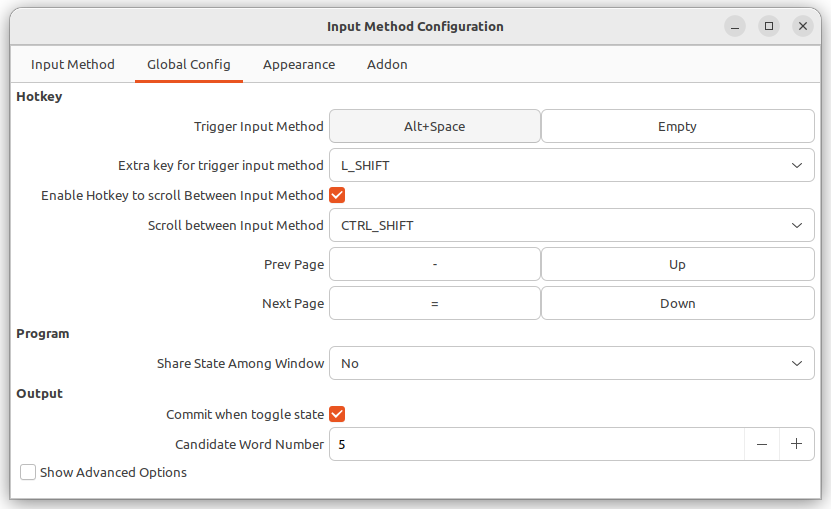

最初しかやらない、忘れやすい設定の備忘録
設定
wayland を無効化する
以下のような問題があったため、 wayland を無効化しました。
- synergy(1.14.6時点) が waylandをサポートしていない
- fcitx がうまく起動しない？
xcalib -invert -alterで色反転できない
/etc/gdm3/custom.conf に以下を追記し、 wayland を無効化します:
WaylandEnable=false
再起動
mozc （日本語入力）を使えるようにする
$ sudo apt install fcitx-mozc
 Fxitx 4にする
ibus を削除
$ sudo apt purge ibus
再起動すると fcitx が動く。
 mozc を追加
 キーバンドは、いつも
Alt+Spaceにしています（OSXは⌘+Space）